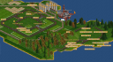
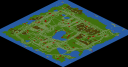
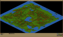

Two Tile Traffic
This sandbox game started out with a simple network plan, conjured up by Progman and tweaked a little by Ammler.

Nothing too fancy we thought, well we thought wrong….


We Never thought we would end up with a network stretched to it’s limit.
Again and again we needed to optimize the entries end exits of the stations, modify the SLH’s and build trains, loads of trains.. Some 700 at the end.

And here it is, the busiest station of them all in this game, Oil / Wood Drop, taking in 205 trains (note the extension at the right which is rotated 90 degrees and tunnels Goods Pick-up)

No need to explain that this station periodically jams at both the entry and exit.
Crazy game, loads of fun. 😀
Those little red dots crawling around the map, well… they are not ants 😉 

Categories: Public Server